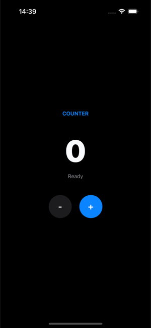

First Action
An action is QORM's declarative behavior. An action is a sequence of steps, placed in actions/<id>.json, and triggered by name from an onPress in the UI.
Defining an action
actions/increment.json:
{
"type": "action",
"id": "increment",
"steps": [
{ "type": "state.set", "path": "count", "value": "{{ state.count + 1 }}" }
]
}Triggering from the UI
A button's onPress is the action name (a string); to pass arguments, use an object { "name": …, "args": … }.
{ "type": "button", "id": "inc", "text": "+1", "onPress": "increment" }
{ "type": "button", "id": "toggleTask", "text": "Done",
"onPress": { "name": "toggle", "args": { "id": "{{ item.id }}" } } }
The+ button fires the increment action above; both the number and the status label read state the action writes.
Common step types
{ "type": "state.set", "path": "name", "value": "Ada" }
{ "type": "state.increment", "path": "count", "value": 1 }
{ "type": "state.toggle", "path": "dark" }
{ "type": "state.append", "path": "items", "value": { "id": 3, "text": "new" } }
{ "type": "state.toggle", "path": "items", "matchKey": "id", "match": "{{ id }}", "field": "done" }Inside {{ … }} is a full expression (it can read state.* / action arguments and do arithmetic); list-oriented steps use matchKey + match to locate a specific item. See Expressions for the whole language.
Branching with if
An if step runs one of two nested step lists depending on a condition:
{
"type": "if",
"condition": "{{ len(trim(state.name)) > 0 }}",
"then": [
{ "type": "state.set", "path": "message", "value": "Hello {{ state.name }}" },
{ "type": "state.set", "path": "formError", "value": "" }
],
"else": [
{ "type": "state.set", "path": "formError", "value": "Name is required" }
]
}Both branches are optional and if steps nest (up to 32 deep). The condition uses the same truthiness rules as a node's if prop: null, false, 0, "" and empty collections are falsy. Remember the {{ … }} — a bare string like "state.count > 0" is a non-empty constant, so it is always truthy; the loader warns about exactly that mistake.
Looping with forEach
A forEach step runs its body once per element of a bound collection:
{
"type": "forEach",
"in": "{{ state.items }}",
"as": "line",
"steps": [
{ "type": "state.updateWhere", "path": "items", "matchKey": "id",
"match": "{{ line.id }}", "item": { "gift": "{{ true }}" } }
]
}The element is bound under as (default item), together with index, first and last — and an alias renames the whole set, so "as": "line" gives line / lineIndex / lineFirst / lineLast. These are exactly a list's renderItem scope names, including the fallback to item when the alias is reserved or malformed.
inis evaluated once, so a body that appends to the same array does not
extend the loop. The elements themselves are live, so a step that updates the array it is iterating sees its own writes.
- Anything that is not a non-empty array —
null, a number, an object, an
empty array, a missing state key — iterates zero times rather than erroring.
- Iterations are capped at 10000, the body shares the
ifstep's 32-deep
nesting cap, and an invoke inside it still counts against the call cap. No nesting can hang a dispatch.
Calling another action
An invoke step calls another action by name, so shared behaviour lives in one file instead of being copy-pasted:
{ "type": "invoke", "name": "resetForm", "args": { "keepEmail": "{{ true }}" } }args are evaluated in the caller's context and merged into the callee's scope, exactly like the args on a button's onPress. Call depth is capped at 16, so a recursive or mutually-recursive chain terminates instead of hanging; the loader reports a target action that does not exist.
Calling a backend
http.get writes the response to a state path, and writes failures to the error path:
{ "type": "http.get", "url": "https://catfact.ninja/fact", "result": "fact", "error": "err" }Success and failure branches
Any http.* step can carry onSuccess / onError step lists that run after the request returns. Inside onSuccess the decoded body is bound to {{ response }}; inside onError the failure message is bound to {{ error }}:
{
"type": "http.get",
"url": "https://api.example.com/items",
"result": "items",
"error": "loadError",
"onSuccess": [
{ "type": "state.set", "path": "total", "value": "{{ count(response) }}" },
{ "type": "state.set", "path": "status", "value": "loaded" }
],
"onError": [
{ "type": "state.set", "path": "status", "value": "Could not load: {{ error }}" }
]
}The classic writes still happen first and are unchanged: on success result is written and any stale error path is cleared, on failure the error path is written and result is left alone. The branches run after that, so {{ state.items }} is already populated inside onSuccess.
Failures include transport errors and any non-2xx status (whose message is the status line, e.g. 500 Internal Server Error). Requests time out after 20 seconds; there is no per-step timeout field.
Timers
A timer is an invisible node you place in the scene tree — it renders nothing and schedules an action instead. Use every for a repeating tick or after for a one-shot, both in milliseconds:
{ "type": "timer", "id": "poll", "every": 5000, "onTick": "refresh" }
{ "type": "timer", "id": "hint_once", "after": 2000, "onTick": "showHint" }onTick takes an action name or the { "name": …, "args": … } form, and dispatches through exactly the same path as a button press. Because a timer is a node, its lifetime is its presence in the tree — put an if on it and it stops itself:
{ "type": "timer", "id": "countdown", "every": 1000,
"if": "{{ state.running }}", "onTick": "tick" }The scheduler reconciles timers after every re-render, so the same id is never double-scheduled, a timer that disappears is cancelled, and a changed interval reschedules. every is floored at 250 ms, and repeating ticks pause while the browser tab is hidden. A timer needs an id — that is the key the scheduler reconciles on.
Scene lifecycle: onEnter
A scene can name an action to run whenever it is entered — the usual "load this screen's data" hook. It sits next to root in the scene file:
{
"type": "scene",
"id": "main",
"onEnter": "loadData",
"root": { "type": "column", "id": "root", "children": [] }
}The object form { "name": "load", "args": { … } } works too, with args evaluated in the scene's context. onEnter fires on the entry scene's first load, on a deep link straight into the scene, on a navigate step, and on navigating back into it. It is deliberately not replayed by a page refresh, an SSE reconnect, or a dev hot reload — so a load action does not run twice for one visit. Make it idempotent anyway by guarding it with an if.
There is no onExit counterpart today.
examples/lifecycle wires all of this together — an onEnter load, a polling timer, a one-shot after hint, an if-guarded countdown that stops itself, and a form submit with if/else branches plus an invoke reset:
qorm run examples/lifecycleStandard action patterns
These are the reusable shapes built entirely from the step types above. Each is a real, load-clean recipe — copy the JSON and rename the paths. Working examples live in examples/form (form validation) and examples/tasks (optimistic update + error handling).
Loading state
A dispatch paints one frame by default, after every step has finished — by which time loading is already back to false, so the flag would never be seen. The render step is what makes it visible: it publishes the state written so far as a frame, right where it appears, before the slow step blocks.
[
{ "type": "state.set", "path": "loading", "value": "{{ true }}" },
{ "type": "render" },
{ "type": "http.get", "url": "https://api.example.com/items", "result": "items", "error": "error" },
{ "type": "state.set", "path": "loading", "value": "{{ false }}" }
]That frame is an ordinary render, so anything conditioned on the flag appears:
{ "type": "row", "if": "{{ state.loading }}", "children": [
{ "type": "spinner", "id": "spin", "size": 16 },
{ "type": "text", "id": "lbl", "text": "Loading…" }
] }render only ever adds frames — leave it out and the action lands in a single frame exactly as before, and where the app is running determines whether the extra frames are drawn at all. It is a no-op on a host that does not paint mid-action, so the same JSON is safe everywhere. examples/netdemo and examples/tasks both ship this shape.
Background request (async)
render makes the spinner visible, but the request still runs to completion before the dispatch ends — so nothing else in the session moves until the backend answers. Add "async": true and the request is handed to a background worker instead: the dispatch returns immediately (its frame already shows the loading state) and the result branch runs when the reply arrives.
[
{ "type": "state.set", "path": "loading", "value": "{{ true }}" },
{ "type": "http.get", "url": "https://api.example.com/items", "async": true,
"result": "items", "error": "error",
"onSuccess": [ { "type": "state.set", "path": "loading", "value": "{{ false }}" } ],
"onError": [ { "type": "state.set", "path": "loading", "value": "{{ false }}" } ] }
]Two rules follow from the request outliving the dispatch:
- Read the result in
onSuccess/onError, never in a sibling step. The
steps after an async request run straight away, while it is still open, so a sibling would read the value from before the call.
- Clear the loading flag in both branches. A flag cleared only in
onSuccess is stuck on forever the first time the backend fails.
Inside a branch, {{ state.x }} reads the state as it is now (the user may have kept typing), while the action's own arguments still hold the values the click carried. async defaults to false, and falls back to false on a host with no background worker, so a step that reads its response from a sibling keeps working unchanged. examples/netdemo ships both shapes side by side.
Governing a background request: key, pending, timeout
Three optional fields turn the two rules above into things you no longer have to remember. examples/netdemo ships all three on one search box:
{ "type": "http.get", "url": "https://api.example.com/search?q={{ state.q }}",
"async": true, "key": "search", "pending": "searching", "timeout": 4000,
"result": "hits", "error": "searchErr" }keynames a request slot. Starting a new request on a key cancels
whichever request is still open on it and discards that one's outcome entirely — no result write, no error write, no branch. Fire this on every keystroke and what lands is the reply to the last keystroke, not whichever round trip happened to finish last. Without it, a fast reply to an old query overwrites a slow reply to the current one, which is the classic search-as-you-type bug.
pendingis a state path heldtruefor exactly as long as the request is
open — set on launch, cleared when it settles, including on failure, timeout and refusal. It replaces the pair of state.set steps (and the second of the two rules above: there is no branch left to forget). Bind your spinner to {{ state.searching }} as usual. The path is reference-counted, so two overlapping requests hold it until the last one settles, and a superseded request never switches off its successor's spinner.
timeoutcaps this request in milliseconds, overriding the shared 20s
ceiling. Expiry is an ordinary failure — the error path is written and onError runs, with the message request timed out after 4000ms.
One more guard needs no JSON: a runtime allows 64 open background requests at a time. Past that a step fails immediately on its error path with too many concurrent requests (64 in flight) rather than queueing invisibly — the shape that saves you when a 250ms timer polls a backend that takes seconds.
Pacing an action: delay
{ "type": "delay", "ms": 500 } runs the steps that follow it in the same list when the wait expires, so render / delay / render stages a reveal without a timer node or a second action:
[ { "type": "state.set", "path": "phase", "value": "{{ 'one' }}" },
{ "type": "render" },
{ "type": "delay", "ms": 400 },
{ "type": "state.set", "path": "phase", "value": "{{ 'two' }}" },
{ "type": "render" } ]It never blocks: the wait goes to the same background worker async uses, so the session stays answerable throughout. On a host with no background worker (an offline render, qorm render, an MCP simulation) it degrades to no wait at all and the remaining steps run immediately — the action still reaches the same final state, nobody just waited for it.
In a packaged app, every request is async
This is the one place where the same JSON behaves differently depending on where it runs, and it is worth knowing before you ship.
The client-side hosts — the offline package produced by qorm package (web / iOS / Android), the standalone WASM runtime, and the live playground — are single-threaded: the goroutine that runs your action is the same one servicing the browser's event loop. A blocking request there does not merely stall the UI, it deadlocks the whole app. So those hosts run every http.* step on the background worker, whether or not its JSON says "async": true.
The consequence is a rule, not a preference:
On a packaged app, the steps that follow anhttp.*step run while the request is still open. Anything that depends on the reply must live inonSuccess/onError.
[
{ "type": "http.get", "url": "…/items", "result": "items",
"onSuccess": [ { "type": "state.set", "path": "count", "value": "{{ count(response) }}" } ] },
{ "type": "state.set", "path": "count", "value": "{{ count(state.items) }}" }
]The first form is correct everywhere. The second is a sibling read: it works under qorm run (the server host blocks unless you opt in) and quietly reads the previous value once the same app is packaged. Writing "async": true explicitly is the cheapest way to find out — it gives you the packaged-app behaviour on the dev server too.
Where the request lands is unchanged: once every reply is in, the state, and therefore the render, is exactly what the synchronous version would have produced. Async changes the sequence of frames, never the destination.
Error handling
http.* writes any failure message to the error path (and clears it on success). Bind {{ state.error }} in the UI and show it with an if:
{ "type": "http.post", "url": "https://api.example.com/save", "body": "{{ state.draft }}", "error": "error" }{ "type": "text", "if": "{{ len(state.error) > 0 }}", "text": "Could not save: {{ state.error }}" }When the two outcomes need different follow-up work rather than a different message, use the onSuccess / onError branches shown above instead of inspecting the error path afterwards.
Optimistic update (with rollback)
Mutate state immediately, call the backend, then revert only if the call set the error path. The rollback re-applies the same toggle, but its match collapses to an empty string (matching nothing) on success — so success is a no-op and failure reverts:
[
{ "type": "state.toggle", "path": "tasks", "matchKey": "id", "match": "{{ id }}", "field": "done" },
{ "type": "http.put", "url": "https://api.example.com/tasks/{{ id }}", "error": "error" },
{ "type": "state.toggle", "path": "tasks", "matchKey": "id", "match": "{{ len(state.error) > 0 ? id : \"\" }}", "field": "done" }
]Form validation
Write each field's error with one conditional state.set (a ternary picks the message or an empty string), then bind {{ state.fieldErrors.email }}. A later step can read the errors it just wrote to derive an overall status:
[
{ "type": "state.set", "path": "fieldErrors.email",
"value": "{{ len(trim(state.email)) == 0 ? \"Email is required\" : (matches(state.email, \"^[^@\\\\s]+@[^@\\\\s]+\\\\.[^@\\\\s]+$\") ? \"\" : \"Enter a valid email address\") }}" },
{ "type": "state.set", "path": "status",
"value": "{{ len(state.fieldErrors.email) == 0 ? \"OK\" : \"Please fix the highlighted fields\" }}" }
]{ "type": "text", "if": "{{ len(state.fieldErrors.email) > 0 }}", "text": "{{ state.fieldErrors.email }}" }An if step reads better than a ternary once a field has more than two outcomes, and it can write several paths per branch.
Letting the browser block the submit
Input widgets carry the browser's native constraint attributes — required, pattern, maxLength, plus inputMode for the on-screen keyboard. Those are the only validation attributes the renderer emits; there is no minlength, min, max or step, and pattern is input-only (a textarea has no such attribute).
A button with no onPress inside a form is already gated: HTML makes it a submit button, so the browser refuses to start the submission while a constraint fails and the form's own handler never runs. The leak was a button carrying its own onPress — its click handler ran before, and independently of, the constraint check. The submit prop closes it:
{ "type": "form", "id": "signup", "onPress": "createAccount", "children": [
{ "type": "input", "id": "email", "binding": "email", "required": true,
"inputMode": "email", "pattern": "[^@\\s]+@[^@\\s]+\\.[^@\\s]+" },
{ "type": "button", "id": "save", "label": "Create", "submit": true },
{ "type": "button", "id": "cancel", "label": "Cancel", "submit": false, "onPress": "goBack" }
] }A form names its submit action with onPress — that is what Enter in a field and a native submit button both fire.
"submit": truemakes the button a real submit button. With noonPressof
its own the press is the submission, which the browser has already validated; with an onPress, the handler is gated on the form's validity check, so a failing form neither dispatches the action nor submits, and the browser's own message bubble appears pointing at the offending field.
"submit": falsemakes it an ordinary button, never gated. That is what a
Cancel button wants: it must not be blocked by an unrelated invalid field.
- Leaving
submitoff keeps exactly the old markup, so nothing you already
wrote changes behaviour.
- The gate is deliberately not inferred from being inside a form — the renderer
has no ancestor channel, and inferring it would break the Cancel case. The prop states intent, not place; it is inert on a button that is not in a form.
"novalidate": trueon theformturns the browser's checking off, and the
button gate reads the form's flag, so the two switch off together. "novalidate": true on the button (alongside submit) is the per-button escape hatch — a "Save draft" that should bypass validation.
A gated button that passes runs its own action and lets the form submit, so put the work on the button or on the form, not both.
textformfield ties the two channels together: when the field opts into native validation — it carries a literal required, or a non-empty pattern; those two are read as written, not as bindings — its error text also rides the native channel as title plus aria-invalid, so your wording shows in the browser's own bubble. And a field the user has actually interacted with draws a red border natively (:user-invalid), so an untouched required field does not look wrong before anyone has typed.
Native constraints still are not a validation engine: they cannot express "passwords must match" or anything server-side. Keep using the state.set recipe above for those, and bind the button's disabled when you want the control to look unavailable rather than to complain on click.
Pagination
For server-side paging, keep a page counter in state and advance it; the offset is computed in the request URL binding:
[
{ "type": "state.increment", "path": "page", "value": 1 },
{ "type": "http.get", "url": "https://api.example.com/items?offset={{ state.page * 20 }}&limit=20", "result": "items", "error": "error" }
]For client-side paging over an array you already hold, no action is needed: give the list (or gridview) a pageSize and bind page to the counter — see First Scene. datatable has no built-in paging, so it still needs a slice() expression over the state array.
Debounced search — pattern via existing mechanism
There is no debounce step. Debounce is a client-side concern: bind the input to {{ state.q }} via onChange and let the UI throttle how often it invokes the search action. The action itself is just an http.get:
{ "type": "http.get", "url": "https://api.example.com/search?q={{ state.q }}", "result": "results", "error": "error" }Request cancellation (cancel token) is likewise not modeled by a step today — treat it as planned; the last response written to result wins.
- Actions are entirely declarative data — no arbitrary code. When you need custom native logic, see the User middle layer.
- When external side effects / system capabilities are involved, follow the Permission model.